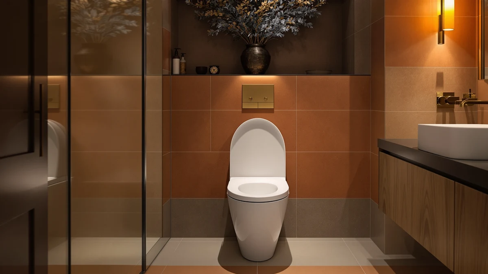

Bidet Toilet Seat Not Spraying? How to Troubleshoot It (2026)
Prices and picks verified as of August 2026. Independent, reader-supported reviews.


Things to Know Before You Buy
- Most cases of a bidet toilet seat not spraying come down to three causes: a closed water valve, a clogged nozzle, or the wrong wash mode selected.
- Check the water supply valve behind the toilet first. It takes ten seconds and resolves the problem more often than any other step.
- Hard water buildup inside the nozzle is the second most common cause, especially after six or more months of daily use.
- Electric seats need continuous power to run their pump, so a tripped GFCI outlet can look exactly like a spray failure.
- If cleaning and a power reset don't restore pressure, the internal pump or solenoid valve has likely failed, and replacing the seat usually costs less than a repair call.
A bidet toilet seat not spraying almost always traces back to the water supply, a clogged nozzle, or a setting blocking the wash function from activating. You don't need a plumber for most of these fixes, and you can diagnose the cause in under ten minutes by working through the water supply, the nozzle, and the power connection in that order.
We researched common failure points across verified owner reviews and manufacturer support documentation for both electric and non-electric bidet seats, and the pattern holds across brands: most spray failures trace back to water flow, not a broken unit. A seat that sprayed fine yesterday and stopped today is almost never a design flaw.
The order below fixes the most seats fastest. We also flag the mistakes that make troubleshooting harder and cover what to look for in a replacement seat if yours can't be revived.
What You Need to Know
Every electric bidet seat pulls water from the same supply line that feeds your toilet tank, routes it through an internal pump or solenoid valve, and pushes it out through a retractable nozzle. When a bidet toilet seat is not spraying, the failure sits somewhere along that path, and narrowing down which link broke saves you from replacing a seat that only needs a rinse.
Start with the water supply. Most bidet seats install with a T-valve that splits the line feeding the toilet tank, and if that valve is even partially closed, the seat won't build enough pressure to spray. Next comes the nozzle itself, a thin metal or plastic wand with two or three tiny holes that clog first because they're narrowest. Hard water minerals, toilet paper residue, and soap scum from cleaning wipes narrow those holes over months of use.
Power matters too, but only for electric models. Non-electric bidet attachments run on water pressure alone and don't need an outlet, so if you have one of those and it's not spraying, skip straight to the valve and nozzle. Electric seats add a pump, a heating element, and a control board, and any of those can interrupt the wash cycle if the seat loses power or throws an internal fault.
Knowing whether the supply, the nozzle, or the power system is the most likely culprit for your seat type tells you where to start looking before you open the housing or call a repair line.
Types and Categories
Not every bidet toilet seat not spraying problem looks the same, and the symptom tells you a lot about the cause before you touch a tool.
No spray at all usually means water isn't reaching the nozzle. That points to a closed supply valve, a disconnected hose, or, on electric models, a seat that lost power entirely. The control panel is often dark or unresponsive alongside the missing spray.
Weak or dribbling spray suggests water is reaching the nozzle but something is restricting flow once it gets there. A partially clogged nozzle, a kinked supply hose behind the tank, or low household water pressure are the usual suspects, and this is the most common complaint in verified owner reviews.
Intermittent spray, where the seat sprays for a few seconds and then cuts out, points to a pump or solenoid valve that's failing rather than a simple blockage. It can also happen when a seat overheats during extended use and its internal safety cutoff activates.
Spray from the wrong angle or position, rather than no spray, is a settings issue rather than a mechanical one. Most seats let you adjust nozzle position and spray width independently, and a setting bumped during cleaning can look like a malfunction when the wash function is working fine. Matching your symptom to one of these four categories narrows the fix before you disassemble anything.
How to Choose
If you've checked the valve, cleaned the nozzle, and confirmed power and the seat still isn't spraying, the pump or solenoid valve inside has likely failed. At that point, replacing the seat costs less than most professional repairs and gets the wash function working again the same day.
When you're shopping for a replacement, prioritize the parts that caused your last seat to fail. If mineral buildup was the culprit, look for a seat with a self-cleaning nozzle cycle that rinses before and after each use, since that reduces how often deposits accumulate in the first place. A stainless steel nozzle also resists corrosion better than plastic over years of daily contact with tap water.
Adjustable water pressure and nozzle position matter more than most buyers expect, since a fixed-pressure seat that's too strong for one household member and too weak for another leads to the same complaints that sent you looking for a replacement. Look for at least three pressure settings and independent position adjustment.
If your bathroom doesn't have a nearby grounded outlet, a non-electric attachment avoids the pump and control board entirely, trading the heated seat and warm air dryer for two fewer failure points. And check what the warranty actually covers: many exclude the nozzle and internal valve, the exact parts most likely to fail from hard water.
Common Mistakes to Avoid
The biggest mistake owners make with a bidet toilet seat not spraying is skipping straight to disassembly. Opening the nozzle housing or pulling the seat off the tank voids some warranties and rarely fixes a problem that started with a closed valve or a settings change, both of which are a two-minute check.
Using anything but water and a soft brush to clean the nozzle is the second most common mistake. Vinegar diluted with water works for mineral deposits, but bleach, ammonia, or abrasive scrubbers degrade the rubber seals inside the nozzle mechanism and can turn a clog into a leak.
Ignoring the water shutoff valve is another frequent error. Many households install a bidet seat with the valve turned only partway, enough to fill the tank but not enough to build wash pressure, so it's worth turning that valve fully open even if you assume it already is.
Skipping the reset step trips people up on electric models. Most control boards clear a stuck fault code with a simple power cycle, unplugging the seat for thirty seconds before plugging it back in, but owners often try three or four other fixes first. And don't assume a seat is broken after one failed wash attempt: low household water pressure during peak hours can cause a single weak spray with no real fault in the seat itself.
Care and Maintenance
Preventing a bidet toilet seat from not spraying again comes down to a maintenance routine most owners skip until something goes wrong. Wipe the nozzle with a damp cloth weekly, since it retracts after every wash and picks up residue that hardens if left alone.
Run the self-cleaning cycle, if your seat has one, at least once a week even on days you don't use the wash function. That cycle flushes the nozzle holes before deposits settle, and it's the single biggest factor in how long a seat goes between spray problems.
Descale the nozzle and inline filter every three to six months if you're on hard water, using a diluted vinegar soak rather than a store-bought descaler that can leave residue behind. Households on soft or filtered water can usually stretch that to once a year.
Check the supply valve and hose connection during your regular bathroom cleaning rather than waiting for a problem, since a slow drip often precedes a full clog by weeks. And keep a note of the seat's spray position and pressure settings somewhere, so a reset after a power outage doesn't leave you troubleshooting a seat that was actually working fine before the settings reverted.
Our Top Picks
If your current seat can't be revived, these three models cover the range most owners look for after a spray failure: a reliable all-around pick, a lower-cost option with the same self-cleaning nozzle, and a premium seat built for consistent pressure over years of use.

Editor's Pick
Brondell Swash SE400 Electric Bidet
A dual stainless steel nozzle and adjustable pressure settings make this the safer upgrade if clogging was your main complaint with your last seat.
$279.99
Check Price on Amazon
Best Value
Electric Heated Bidet Toilet Seat
A self-cleaning nozzle mode at a lower price, worth considering if mineral buildup was what killed your previous seat.
$169.99
Check Price on Amazon
Premium Choice
Brondell Thinline T44 Swash Electric
A slim profile with dual retractable nozzles, built for households that want steady spray pressure without revisiting this problem for years.
$641.53
Check Price on AmazonWhy is my bidet toilet seat not spraying at all?
The most common cause is a closed or partially closed water supply valve behind the toilet.
Why is the spray weak on my bidet seat?
Weak spray usually points to a partially clogged nozzle or a kinked supply hose.
Frequently Asked Questions
Why is my bidet toilet seat not spraying at all?
The most common cause is a closed or partially closed water supply valve behind the toilet. Check that the valve is fully open, then confirm the seat has power and that the wash mode is selected on the remote or control panel, since some models require you to press wash twice: once to select the mode and once to activate the spray.
Why is the spray weak on my bidet seat?
Weak spray usually points to a partially clogged nozzle or a kinked supply hose. Mineral deposits from hard water build up inside the nozzle holes over months of use and narrow the opening, which reduces pressure even though water is still flowing. Removing and rinsing the nozzle, and checking the hose for kinks behind the tank, resolves most weak-spray cases.
Can hard water cause a bidet toilet seat to stop spraying?
Yes. Hard water is one of the leading causes of nozzle clogs over time, since calcium and magnesium deposits accumulate inside the narrow spray holes and inline filter. Owners in hard water areas report needing to descale or replace the nozzle filter every few months to keep spray pressure consistent, compared to once or twice a year with softened water.
Why does my bidet seat spray water, then stop after a few seconds?
Intermittent spray that cuts out after a few seconds usually means the internal pump or solenoid valve is starting to fail rather than a simple clog. It can also happen if the seat overheats during extended use and its safety cutoff trips. If a power cycle doesn't fix it and the pattern repeats every time, the seat likely needs the pump replaced or the whole unit swapped.
When should I replace a bidet seat instead of trying to fix it?
Replace it once you've confirmed the water valve is open, the nozzle is clean, and the seat has power, and it still won't spray. At that point the pump or solenoid valve has likely failed, and a new seat with a self-cleaning nozzle and adjustable pressure typically costs less than a professional repair call and reduces the odds of the same failure recurring.
Verdict
A bidet toilet seat not spraying is rarely a reason to replace the whole unit. Work through the water valve, the nozzle, and the power connection in that order, and most seats spray normally again within minutes. If you've ruled all three out and the seat still won't wash, a replacement like the Brondell Swash SE400 addresses the two most common failure points, clogging and inconsistent pressure, with a dual nozzle and adjustable settings built to hold up longer than the seat you're replacing.